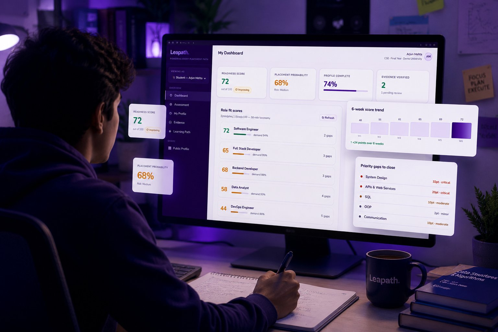

Skill Gap Analysis
Maps each student's current proficiency against 50+ role taxonomies. Identifies the precise gaps — not vague categories, but specific skills — that stand between a student and their target role.
Know which students will get placed — and why.
Leapath is the structured leap from education to employability. We give colleges, TPOs, and students a shared, data-backed view of placement readiness — so you know exactly where each student stands, what gap is in the way, and what it takes to close it before recruiters arrive on campus.
No obligation · No sales pitch · Reply within 1 business day
The TPO dashboard, the student profile, the recruiter view — every surface speaks the same data, so decisions stay grounded in the same evidence.

Hiring bars are climbing while cohort sizes are growing. TPOs are being asked to do more, with less time, and defend results to leadership with data they don't currently have.
Colleges that can't measure readiness early are losing top recruiters silently — and placement outcomes are no longer predictable without structured visibility.
Leapath is not a learning management system. It is a decision-making layer that turns student data into placement strategy.
Maps each student's current proficiency against 50+ role taxonomies. Identifies the precise gaps — not vague categories, but specific skills — that stand between a student and their target role.
Matches students to the roles they are most ready for, ranked by a weighted readiness score. Includes both their stated preference and algorithmically recommended alternatives based on their actual skill profile.
A single composite score — updated after every assessment — that reflects each student's readiness across technical skills, project quality, and domain knowledge. Reliable enough to show employers.
Cohort-level dashboards that surface the patterns individual student reports hide. Which departments underperform? Which roles have the highest demand-readiness mismatch? Act before placements suffer.
Each step produces structured data. No guesswork. No anecdotal reporting.
Students complete a structured, role-aware assessment tailored to employability evaluation.
Responses are mapped against a 150-skill taxonomy. Each skill gets a proficiency score from 0 to 100, grounded in the assessment data.
The system scores the student across every active role taxonomy. The top matches by both score and demand are surfaced for the student and TPO.
For each role, the exact skill gaps are quantified: which skills are missing, by how much, and how critical they are to that role's hiring bar.
A composite readiness score is generated and persisted. The student sees their trajectory. The TPO sees the cohort. The institution makes evidence-based decisions.
Same students. Same recruiters. Same calendar. Different operating model.
Unlike generic placement tools, Leapath evaluates students against structured role-based benchmarks — not vanity metrics or generic test scores.
Stop receiving placement data after the fact. Leapath gives TPOs a live dashboard that shows student readiness before the recruitment season — with enough lead time to intervene.
Most students enter placement season without a clear picture of their own readiness. Leapath changes that — with a personalised score, role match ranking, and a learning path that closes the gap before companies arrive.
Skip the unstructured applicant pile. Leapath gives recruiters access to a calibrated talent pool — every candidate scored on a standardised readiness framework, every profile backed by assessment data your team can trust.
Leapath does not recommend generic learning tracks. Every roadmap is generated using assessment signals, placement-readiness patterns, student ambition, and role-specific skill gaps — helping students focus on the exact areas that move them closer to their target career path.
Students receive personalized progression pathways based on their target role, future ambition, and current readiness level — whether they aim for product companies, higher studies, startups, government roles, or core industries.
Learning recommendations are mapped directly against identified weaknesses surfaced during assessment — helping students strengthen the exact competencies affecting employability readiness.
Recommendations are not restricted to computer science. Leapath supports diverse academic and professional pathways across technology, business, healthcare, finance, design, analytics, communication, and emerging industries.
Students receive guidance on communication confidence, interview preparedness, collaboration skills, presentation ability, and professional visibility — all mapped to recruiter expectations.
As students improve, their readiness trajectory evolves dynamically. Leapath continuously recalibrates recommendations based on updated assessments, learning progress, and institutional benchmarks.
TPOs and institutions gain visibility into where students are struggling collectively — enabling targeted interventions, department-level support strategies, and evidence-based placement planning.
Every recommendation pathway evolves with student progress, changing recruiter expectations, and institution-specific placement outcomes — ensuring guidance remains practical, personalized, and outcome-oriented.
Aggregate signals that no individual student report can surface — and turn them into institutional decisions.
Leapath is built around four systems working together. Each one is something institutions can't easily assemble in-house.
Continuously evolving role-skill models, aligned with industry hiring patterns — every cohort sharpens the next.
Leapath is being shaped around placement-readiness observations, recruiter expectations, institutional workflows, and employability patterns seen across modern higher education ecosystems.
Leapath isn't a generic SaaS retrofitted for education. Every surface — the readiness score, the gap map, the recruiter view — was shaped through conversations with TPOs, faculty, and placed students.
Most placement tools start with a database and bolt on a UI. Leapath started in TPO offices and faculty rooms — watching how readiness gets discussed, where Excel sheets fall apart, and which signals actually predict who lands a role. The platform is the structured form of that workflow.
Built around placement-readiness research. Models calibrated against how Indian institutions actually run their placement cells, not generic global templates.
Designed using insights from institutional placement workflows. TPOs are involved in the room when each new feature is shaped — not surveyed about it after launch.
Focused on improving employability visibility. Surfaces the signals colleges already track, in a structure recruiters and students can both read.
A predictable rollout. No long IT projects. Most institutions are running their first cohort within 3–4 weeks.
A 30-minute conversation with your TPO and one decision-maker. We map your placement goals, departments, and current workflows.
We configure your taxonomy, target roles, and assessment flow. You upload student data via a secure template — no IT integration needed.
Students complete the assessment in 15 minutes. Your TPO dashboard populates with cohort readiness, gaps, and at-risk flags in real time.
Review findings with our team. Define interventions, training tracks, or recruiter conversations grounded in your actual cohort data.
A 30-minute walkthrough using your department's profile and sample data. Zero generic demos. Zero sales pitch. You'll leave with a concrete view of what running Leapath would look like for your institution.
A real readiness profile — skill scores, role-fit, gap quantification.
How a student is scored against active hiring roles, with critical gap deltas.
The live TPO view: at-risk segmentation, intervention tracking, leadership-ready reporting.